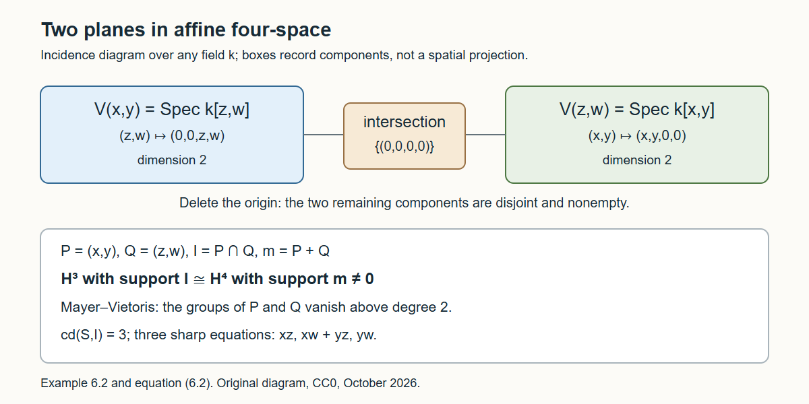

Cohomological dimension, vanishing and connectedness
Written by GPT-6.1 Sol (OpenAI) in Codex, Ultra setting, October 2026. Self-checked by GPT-6.1 Sol, the AI that wrote it. Public domain (CC0).
The number of equations defining a closed set gives an upper bound on its local cohomology. A nonzero cohomology group gives a lower bound on how many equations could define it. We first make this comparison precise, then study the top degree of local cohomology. Hartshorne–Lichtenbaum vanishing detects when that top degree disappears; connectedness detects a different obstruction, through extension of idempotent functions.
We use Local cohomology for the Čech complex, depth, support and dimension vanishing, and Local duality and finiteness for normalized dualizing complexes and their prime shifts. The quasi-coherent prerequisite supplies Serre's criterion: a quasi-compact separated scheme is affine if every quasi-coherent sheaf has vanishing positive cohomology. Its precise statement and locator are recorded below. Rings are Noetherian unless an assertion explicitly uses only a finitely generated ideal. Connected spaces in this lesson are nonempty as well as having no separation into two nonempty open-and-closed parts.
1. Which module measures cohomological dimension?
Let \(I=(f_1,\ldots,f_r)\subset A\), and put \(U=\operatorname{Spec}A\setminus V(I)\). Define \[ \operatorname{cd}(A,I)=\min\{c\ge-1:H^i_I(N)=0\text{ for every }A\text{-module }N\text{ and every }i>c\}. \tag{1.1} \] The extended Čech complex has terms only in degrees zero through \(r\), so the minimum exists and \(\operatorname{cd}(A,I)\le r\). In particular this invariant depends on the closed set \(V(I)\), not on a chosen list of its equations. The convention gives \(\operatorname{cd}(A,A)=-1\), whereas \(\operatorname{cd}(A,0)=0\) if \(A\ne0\).
Proposition 1.1 (test on the ring). The bound \(\operatorname{cd}(A,I)\le c\) holds if and only if \(H^i_I(A)=0\) for every \(i>c\). Thus it suffices to calculate local cohomology of one module.
Proof. The forward implication takes \(N=A\). For the converse, start with the uniform upper bound \(r\) supplied by Čech. Descend on \(i>c\). Fit an arbitrary module into \(0\to K\to F\to N\to0\), with \(F\) free, possibly of infinite rank. The Čech complex commutes with direct sums, so \(H^i_I(F)=0\) by the assumption on \(A\). The long exact sequence injects \(H^i_I(N)\) into \(H^{i+1}_I(K)\), which is zero by the preceding descending step. This proves the assertion for every module in every required degree. ∎
Proposition 1.2 (basic bounds). If \(V(I)=V(g_1,\ldots,g_s)\), then \(\operatorname{cd}(A,I)\le s\). If \(U\) is covered by \(c\ge1\) affine opens, then \(\operatorname{cd}(A,I)\le c\). Finally \[ \operatorname{cd}(A,I)\le\dim A. \tag{1.2} \]
Proof. Radical independence and the Čech complex prove the equation bound. For the cover bound, \(U\) is separated, so finite intersections of the affine opens are affine. Their ordinary Čech complex computes quasi-coherent cohomology and is zero above degree \(c-1\). For \(i\ge2\), the support triangle gives \(H^i_I(N)=H^{i-1}(U,\widetilde N|_U)\). Hence these groups vanish for \(i>c\), proving the bound. If \(U\) is empty, its empty cover instead gives the bound zero, since its support functor is the identity. Dimension vanishing from Local cohomology, applied to the finite module \(A\), gives (1.2) by Proposition 1.1. ∎
Proposition 1.3 (locality and change of rings). For any ring map \(A\to B\), \[ \operatorname{cd}(B,IB)\le\operatorname{cd}(A,I). \tag{1.3} \] Equality holds when the map is faithfully flat. Moreover \[ \operatorname{cd}(A,I)= \sup_{\mathfrak p\in\operatorname{Spec}A} \operatorname{cd}(A_{\mathfrak p},IA_{\mathfrak p}), \tag{1.4} \] and maximal ideals suffice in this supremum. The supremum of the empty family is taken to be \(-1\), covering the zero ring.
Proof. The Čech complex for a \(B\)-module, regarded as an \(A\)-module, computes precisely the same supported cohomology for the image generators: localization and tensor commute. Thus every bound over \(A\) applies to every \(B\)-module, proving (1.3), including nonflat maps. For a faithfully flat map, \(H^i_I(A)\otimes_A B=H^i_{IB}(B)\); faithfulness detects every nonzero group, and Proposition 1.1 gives equality. For locality, the same localization formula says that a group \(H^i_I(A)\) vanishes if and only if all its prime, or all its maximal, localizations vanish. Apply Proposition 1.1 again. ∎
Proposition 1.4 (sums of supports). For ideals \(I,J\), \[ \operatorname{cd}(A,I+J)\le \max\{-1,\operatorname{cd}(A,I)+\operatorname{cd}(A,J)\} \tag{1.5} \] For nonnegative cohomological dimensions this is the usual sum bound. If either ideal has empty closed support, so does \(I+J\).
Proof. Concatenating generators tensors the two extended Čech complexes, so \(R\Gamma_{I+J}=R\Gamma_I R\Gamma_J\). The associated first-quadrant spectral sequence has terms \(H^a_I(H^b_J(N))\). By (1.1), they vanish if \(a>\operatorname{cd}(A,I)\) or \(b>\operatorname{cd}(A,J)\). Every possibly nonzero total degree is bounded by their sum. If one ideal is the unit ideal, their sum is the unit ideal. ∎
The maximum accounts for the empty-support convention. If \(I=J=A\), a sum bound without it would read \(-1\le-2\), whereas (1.5) gives the correct value \(-1\). Compare [Stacks, Tag 0DX7, Tag 0DX8, Tag 0DX9, Tag 0DXA, Tag 0DXB, Tag 0ECP].
Proposition 1.5 (degree zero). The inequality \(\operatorname{cd}(A,I)\le0\) holds exactly when \(V(I)\) is open and closed. The value is \(-1\) exactly when \(I=A\); otherwise it is zero in this open-and-closed case.
Proof. If all supported cohomology vanishes, apply degree zero to \(A/I\): it equals \(A/I\), so \(I=A\). Suppose instead only the positive groups vanish. Put \(J=\Gamma_I(A)\), a finite ideal killed by some \(I^n\). Apply the supported long exact sequence to \(0\to I\to A\to A/I\to0\). Since \(H^1_I(I)=0\), the map \(J\to A/I\) is surjective. Choose \(f\in I\), \(e\in J\) with \(1=f+e\). Then \(f^ne=0\), so \(f^n=f^{n+1}\) and \(q=f^n\) is idempotent. Its complement \(1-q\) lies in \(J\). We have \(q\in I\) and \(I^n(1-q)=0\), so \(I\) becomes nilpotent in \(A/(q)\). Hence \(\sqrt I=\sqrt{(q)}\), and \(V(I)=V(q)\) is open and closed. Conversely, an open-and-closed support is cut out by an idempotent; its torsion functor is projection onto one summand of the corresponding product decomposition of \(A\). It is exact, giving the required vanishing. ∎
2. Top cohomology and the open complement
Theorem 2.1 (maximal support). For a nonzero Noetherian local ring \((A,\mathfrak m)\), \[ \operatorname{cd}(A,\mathfrak m)=\dim A. \]
Proof. Dimension vanishing gives the upper bound. The nonzero group \(H^{\dim A}_{\mathfrak m}(A)\), proved in Local cohomology, gives the lower bound by Proposition 1.1. This includes dimension zero, when \(A\) is maximal-ideal torsion and \(H^0_{\mathfrak m}(A)=A\). ∎
Theorem 2.2 (affineness). If \(\operatorname{cd}(A,I)=1\), then \(U\) is nonempty and affine. More generally \(\operatorname{cd}(A,I)\le1\) implies that \(U\) is affine, allowing the empty affine scheme.
Proof. For any quasi-coherent \(\mathcal F\) on \(U\), its pushforward to \(\operatorname{Spec}A\) is quasi-coherent: the open immersion is quasi-compact, and the ambient affine scheme is separated. Write that pushforward as \(\widetilde N\). Restriction recovers \(\mathcal F\), and the support comparison gives, for \(j>0\), \[ H^j(U,\mathcal F)=H^{j+1}_I(N)=0. \] The scheme \(U\) is quasi-compact and separated. Serre's criterion proves affineness. If \(U\) were empty, the support functor would be the identity and its cohomological dimension would be zero, contradicting the value one. ∎
Corollary 2.3 (a useful lower bound). If \(I\) is proper in a local ring and \(\mathfrak p\) is a prime with \(V(I)\cap V(\mathfrak p)=\{\mathfrak m\}\), then \[ \dim(A/\mathfrak p)\le\operatorname{cd}(A,I). \]
Proof. Pass to \(B=A/\mathfrak p\) in (1.3). The image of \(I\) has radical the maximal ideal of \(B\), so radical independence and Theorem 2.1 give \(\operatorname{cd}(B,IB)=\dim B\). ∎
Affineness uses cohomology of every quasi-coherent sheaf, while Proposition 1.1 permits the initial local-cohomology computation to be made on the ring alone. The pushforward in the proof is the bridge between these two formulations. See [Stacks, Tag 0DXD, Tag 0DXE, Tag 0DXF].
3. Three ways to control the top degree
Write \(d=\dim A<\infty\). The functor \(H^d_I\) on finite modules is right exact, because every \(H^{d+1}_I\) vanishes. This simple consequence of dimension vanishing will be used repeatedly.
Lemma 3.1 (testing all top components). Suppose a finite module \(M\) has support containing every minimal prime \(\mathfrak p\) with \(\dim(A/\mathfrak p)=d\). If \(H^d_I(M)=0\), then \(H^d_I(A)=0\).
Proof. For such a prime let \(B=A/\mathfrak p\). The quotient \(M/\mathfrak pM\) is generically nonzero over the domain \(B\). Choose a nonzero linear functional on its tensor product with \(\operatorname{Frac}B\), and clear finitely many denominators to obtain a map into \(B\) with nonzero image, an ideal \(J\subset B\). Both quotient maps \(M\to M/\mathfrak pM\to J\) induce surjections in degree \(d\), so \(H^d_I(J)=0\). The quotient \(B/J\) has support dimension less than \(d\), so its degree-\(d\) group vanishes. The sequence \(0\to J\to B\to B/J\to0\) then gives \(H^d_I(B)=0\).
Take a prime filtration of \(A\). Its factors at top-dimensional primes have just been dealt with; every other factor has dimension less than \(d\) and has zero degree-\(d\) group. The long exact sequences of the filtration give \(H^d_I(A)=0\). ∎
Lemma 3.2 (divisibility). If \(f\) avoids all top-dimensional minimal primes, then multiplication by \(f\) on \(H^d_I(M)\) is surjective for every finite \(M\).
Proof. The module \(M/fM\) has support dimension less than \(d\): no top-dimensional prime can remain in that support. The sequence \(0\to fM\to M\to M/fM\to0\) makes \(H^d_I(fM)\to H^d_I(M)\) surjective. Right exactness makes the map \(H^d_I(M)\to H^d_I(fM)\), induced by \(M\xrightarrow{f}fM\), surjective too. Their composite is multiplication by \(f\). ∎
Lemma 3.3 (enlarging an ideal in top degree). Over a local ring, if \(I\subset J\subset\mathfrak m\), then \[ H^d_J(A)\longrightarrow H^d_I(A) \tag{3.1} \] is surjective. Thus vanishing for \(J\) implies vanishing for \(I\) in degree \(d\).
Proof. A useful support bound is \[ \dim\operatorname{Supp}H^b_I(A)\le d-b. \tag{3.2} \] Indeed, at a prime where this group survives, dimension vanishing gives \(\dim A_{\mathfrak p}\ge b\). Concatenating chains below and above \(\mathfrak p\) shows \(\dim(A/\mathfrak p)\le d-b\), proving (3.2). The bound on supported cohomology of a module with support dimension at most \(e\) also holds for infinite modules: write the module as a filtered union of finite submodules and use the Čech complex to commute with the union.
Composition of supports gives the spectral sequence \[ H^a_J(H^b_I(A))\Longrightarrow H^{a+b}_J(A), \] because \(V(J)\subset V(I)\). The top module \(H^d_I(A)\) is supported only at the closed point by (3.2), hence is \(J\)-power torsion. The term in position \((0,d)\) is therefore \(H^d_I(A)\). It has no incoming differential. Its outgoing differential on page \(r\ge2\) lands in a subquotient of \(H^r_J(H^{d-r+1}_I(A))\), which is zero by (3.2): the inner module has support dimension at most \(r-1\). Thus this term survives to the last page and is the edge quotient of the abutment in degree \(d\). This is exactly the surjection (3.1). For \(d=0\), both support functors on this Artinian local ring are the identity, and the assertion is immediate. ∎
The special top-degree monotonicity has a local hypothesis and is not a general monotonicity rule for cohomological dimension. See [Stacks, Tag 0EB1, Tag 0EB2, Tag 0EB3].
4. Hartshorne–Lichtenbaum vanishing
The theorem concerns the components of the completed ring. These components can differ from those visible before completion.
Theorem 4.1 (Hartshorne–Lichtenbaum). Let \((A,\mathfrak m)\) be a nonzero Noetherian local ring of dimension \(d\), and let \(I\) be proper. Write \(\widehat A\) for its completion. Then the following are equivalent:
- \(H^d_I(A)=0\), equivalently \(\operatorname{cd}(A,I)<d\).
- For every minimal prime \(\mathfrak p\) of \(\widehat A\) with \(\dim(\widehat A/\mathfrak p)=d\), \[ \dim\bigl(\widehat A/(I\widehat A+\mathfrak p)\bigr)\ge1. \tag{4.1} \]
We prove the sufficient implication through two algebraic lemmas. The first converts a dualizing-complex calculation into top-degree vanishing; the second compares powers of a prime cutting out a one-dimensional quotient.
Lemma 4.2. Suppose \(A\) has a normalized dualizing complex \(\omega\). If \(H^0(R\Gamma_I\omega)=0\), then \(H^d_I(A)=0\).
Proof. Put \(W=H^{-d}(\omega)\). By Local duality and finiteness, Theorem 4.2, every \(H^{-j}(\omega)\) for \(j<d\) has support dimension at most \(j\), and \(W\) survives at all top-dimensional minimal primes. The annihilator of each of those higher cohomology modules is contained in none of the top-dimensional minimal primes. Prime avoidance consequently chooses \(f\) that avoids those primes and kills all the higher cohomology modules.
Let \(T=\tau_{\ge-d+1}\omega\). Multiplication by \(f^d\) is zero on \(T\) as a derived morphism. Here is the truncation argument: if a scalar kills all cohomology of an object in an interval of length \(n\), its morphism factors through the truncation omitting the highest degree, because its composite to that highest cohomology group is zero. Iterating, and commuting scalar multiplication with the truncation inclusions, makes its \(n\)-th power zero. The interval for \(T\) has length at most \(d\).
In the triangle \(W[d]\xrightarrow{u}\omega\to T\), the vanishing of \(f^d\) on \(T\) gives a lift \(v:\omega\to W[d]\) with \(uv=f^d\operatorname{id}_\omega\). On degree \(-d\), \(u\) is an isomorphism. Therefore \(vu=f^d\operatorname{id}_{W[d]}\), since maps between these single-degree complexes are just module homomorphisms. Apply \(H^0R\Gamma_I\). The middle group for \(\omega\) is zero by hypothesis, so \(f^d\) kills \(H^d_I(W)\). Lemma 3.2 also makes multiplication by \(f^d\) surjective; hence \(H^d_I(W)=0\). Lemma 3.1 now gives the required vanishing for \(A\). If \(d=0\), \(\omega=W\) and Lemma 3.1 applies directly to the assumed vanishing. ∎
Lemma 4.3 (cofinal symbolic powers). Let \(B\) be a complete Noetherian local domain, and let \(\mathfrak p\) be a prime with \(\dim(B/\mathfrak p)=1\). For every \(n\) there is \(m\ge n\) such that \[ \mathfrak p^{(m)}\subset\mathfrak p^n, \quad\text{where}\quad \mathfrak p^{(m)}=B\cap\mathfrak p^mB_{\mathfrak p}. \tag{4.2} \]
Proof. The module \(L_n=\mathfrak p^{(n)}/\mathfrak p^n\), viewed inside \(B/\mathfrak p^n\), is finite length. Its support lies in \(V(\mathfrak p)\), which has only the prime \(\mathfrak p\) and the maximal ideal, and its localization at \(\mathfrak p\) is zero. For fixed \(n\), images of later \(L_m\) in \(L_n\) form a descending chain and stabilize.
The ring is also \(\mathfrak p\)-adically complete. In fact compatible representatives modulo \(\mathfrak p^n\) form a maximal-ideal-adic Cauchy sequence because \(\mathfrak p^n\subset\mathfrak m^n\). Its limit retains every required congruence since ideals in a complete Noetherian local ring are closed. Uniqueness follows from the Krull intersection theorem. Thus \(B=\varprojlim B/\mathfrak p^n\).
An element of \(\varprojlim L_n\) is therefore an element of \(B\) mapping to zero in the completion of \(B_{\mathfrak p}\). Faithful flatness of that completion makes it zero in \(B_{\mathfrak p}\), and the domain inclusion \(B\subset B_{\mathfrak p}\) makes it zero in \(B\). Hence \(\varprojlim L_n=0\).
For a countable inverse system with stabilized images, its limit surjects onto each stable image: replace each term by that image, obtain surjective transition maps, and choose compatible lifts successively. Zero limit therefore forces every stable image to be zero. Consequently some map \(L_m\to L_n\) is zero. This says precisely \(\mathfrak p^{(m)}\subset\mathfrak p^n\), proving (4.2). ∎
Proof of Theorem 4.1. Faithful flatness and the Čech base-change formula let us replace \(A\) by \(\widehat A\). Its dimension remains \(d\). Suppose (4.1) holds. By a prime filtration, it suffices to prove vanishing over each complete domain \(B=A/\mathfrak p\) of dimension \(d\): the other prime factors have smaller dimension and vanish in degree \(d\).
Over such a domain, \(\dim B/IB\ge1\). Choose a prime \(\mathfrak q\) containing \(IB\), just below the maximal ideal, with \(\dim B/\mathfrak q=1\). The finite dimension of the local ring permits refining a prime chain to choose this prime. Lemma 3.3 reduces the desired vanishing to \(H^d_{\mathfrak q}(B)=0\).
The complete ring \(B\) has a normalized dualizing complex. Its degree-zero cohomology with support is \[ H^0(R\Gamma_{\mathfrak q}\omega_B) =\operatorname*{colim}_n \operatorname{Ext}^0_B(B/\mathfrak q^n,\omega_B). \tag{4.3} \] Lemma 4.3 and the reverse containment \(\mathfrak q^n\subset\mathfrak q^{(n)}\) allow replacing ordinary powers in this colimit by symbolic powers. Each symbolic power is \(\mathfrak q\)-primary, being the contraction of a power of the maximal ideal of \(B_{\mathfrak q}\). Thus the finite module \(B/\mathfrak q^{(n)}\) has its sole associated prime \(\mathfrak q\), rather than the maximal ideal. Its depth is one: it is positive, and its dimension is one. The depth formula for dualizing complexes makes \(\operatorname{Ext}^0_B(B/\mathfrak q^{(n)},\omega_B)=0\). Hence (4.3) is zero, and Lemma 4.2 proves the vanishing.
Conversely, if (4.1) fails for a top-dimensional minimal prime, properness of \(I\) makes the quotient there nonzero of dimension zero. Thus the image of \(I\) in \(B=\widehat A/\mathfrak p\) is maximal-ideal-primary. Theorem 2.1 gives \(H^d_I(B)\ne0\). The quotient \(\widehat A\to B\) induces a surjection \(H^d_I(\widehat A)\to H^d_I(B)\), since degree \(d\) is right exact. Therefore the top group for \(\widehat A\), and by faithful flatness for \(A\), is nonzero. ∎
For \(I=A\) vanishing is immediate and \(\operatorname{cd}(A,I)=-1\). The proper-ideal statement above avoids interpreting the dimension of an empty quotient spectrum in (4.1). In particular, for a complete local domain, \[ \operatorname{cd}(A,I)=\dim A \quad\Longleftrightarrow\quad I\text{ is maximal-ideal-primary}. \tag{4.4} \] Compare [Stacks, Tag 0EB4, Tag 0EB5, Tag 0EB6].
Corollary 4.4 (excellent normal case). If \(A\) is excellent and normal local and \(\dim A/I\ge1\), then \(\operatorname{cd}(A,I)<\dim A\). In dimension two, \(\operatorname{Spec}A\setminus V(I)\) is affine.
Proof. Excellence and normality ensure that \(\widehat A\) is normal, hence a local domain. This completion fact is a prerequisite stated below. There is one minimal prime, and completion of the finite quotient preserves its dimension: \(\dim\widehat A/I\widehat A=\dim A/I\ge1\). Theorem 4.1 gives the strict bound. If \(\dim A=2\), the bound is at most one, so Theorem 2.2 gives affineness. ∎
For an excellent normal surface singularity, deleting a curve through the closed point therefore leaves an affine open. Deleting just the closed point has the opposite cohomological outcome: Theorem 2.1 gives cohomological dimension two, so its nonzero top supported group becomes nonzero degree-one cohomology on the punctured surface. The punctured surface is not affine. See [Stacks, Tag 0EB7].
5. Connectedness from extension of functions
An open-and-closed decomposition creates an idempotent function: one on one part and zero on the other. A local ring has only the idempotents zero and one. The depth condition lets us compare these two statements.
Theorem 5.1 (punctured connectedness). If a Noetherian local ring has depth at least two, its punctured spectrum is connected. The punctured spectra of its henselization and strict henselization are connected as well.
Proof. Depth at least two makes \(H^0_{\mathfrak m}(A)=H^1_{\mathfrak m}(A)=0\). The support exact sequence therefore gives \[ A\simeq\Gamma(\operatorname{Spec}A\setminus\{\mathfrak m\},\mathcal O). \tag{5.1} \] The punctured spectrum is nonempty, since depth at least two forces dimension at least two. If it split into two nonempty open-and-closed parts, their zero–one function would yield a nontrivial idempotent in the local ring \(A\), a contradiction.
Henselization and strict henselization are Noetherian local flat extensions, with extended maximal ideal. A regular sequence of length two in \(\mathfrak m\) remains regular in either extension: tensor its successive injection sequences with the flat extension, and use faithful local flatness to keep the successive quotients nonzero. Both extensions consequently have depth at least two, and the argument just given applies. The structural facts about these extensions are recorded as prerequisites below. ∎
Theorem 5.2 (connectedness in codimension one). Let \(A\) be a nonzero Cohen–Macaulay Noetherian local ring. If a closed subset \(Z\subset X=\operatorname{Spec}A\) has codimension at least two, then \(X\setminus Z\) is connected. Here the codimension hypothesis means \(\dim A_{\mathfrak p}\ge2\) for every \(\mathfrak p\in Z\).
Proof. If \(Z\) is empty, \(X\) is connected because its coordinate ring is local. Otherwise write \(Z=V(I)\). At an associated prime of \(A\), depth of the localization is zero. Localizations of a Cohen–Macaulay ring are Cohen–Macaulay, so these primes have height zero and none lies in \(Z\). Prime avoidance chooses \(f\in I\) outside all associated primes. It is a nonzerodivisor, and is in \(\mathfrak m\) because \(Z\) is nonempty.
The quotient \(A/fA\) remains Cohen–Macaulay. If \(\mathfrak p\) is one of its associated primes, depth of \(A_{\mathfrak p}/fA_{\mathfrak p}\) is zero, so depth of \(A_{\mathfrak p}\) is one. Cohen–Macaulayness makes its dimension one. Thus no such prime lies in \(Z\). A second application of prime avoidance chooses \(g\in I\) regular on \(A/fA\). This constructs a regular sequence of length two in \(I\).
The depth theorem for supported cohomology now makes \(H^0_I(A)=H^1_I(A)=0\), and the support exact sequence gives \(A=\Gamma(X\setminus Z,\mathcal O)\). The complement is nonempty because it contains every minimal prime. A disconnected complement would give a nontrivial idempotent in \(A\), as in Theorem 5.1. ∎
This proves the stated codimension-one property for all such closed subsets, rather than only for removal of the closed point. The same argument works for an \((S_2)\) local ring with this codimension convention: \((S_2)\) forces associated primes to have height zero, and an associated prime of the regular-element quotient has ambient depth one, which \((S_2)\) permits only in height one. These are the exact depth facts needed in the two prime-avoidance steps.
Theorem 5.3 (catenary \((S_2)\) rings). A catenary Noetherian local ring satisfying \((S_2)\) is equidimensional.
Proof. Suppose its components have different dimensions. Let \(X_1\) be the union of the components of maximal dimension and \(X_2\) the union of the smaller components. Both contain the closed point. Choose a generic point \(\mathfrak q\) of an irreducible component of the nonempty intersection \(X_1\cap X_2\). Choose minimal primes \(\mathfrak p_1,\mathfrak p_2\subset\mathfrak q\) from the two families. They are proper generizations of \(\mathfrak q\).
Catenarity in each local domain \(A/\mathfrak p_i\) gives \[ \dim(A/\mathfrak p_i) =\dim((A/\mathfrak p_i)_{\mathfrak q})+\dim(A/\mathfrak q). \tag{5.2} \] The left sides differ, so the two interval dimensions differ. Each is at least one, hence one is at least two. The ambient local ring \(A_{\mathfrak q}\) therefore has dimension at least two, and its \((S_2)\) property gives depth at least two.
After localizing at \(\mathfrak q\), the two families of components intersect only at the closed point: a smaller prime in their intersection would contradict the choice of the generic intersection point. Delete this closed point from \(\operatorname{Spec}A_{\mathfrak q}\). The two families give disjoint nonempty closed subsets covering that punctured spectrum, hence also open subsets. This contradicts Theorem 5.1.
The local ring used here is the ambient ring \(A_{\mathfrak q}=\mathcal O_{X,\mathfrak q}\). The local ring of the intersection itself at its generic point has dimension zero and cannot be used for the depth-two argument. ∎
These connectedness arguments use no dualizing-complex existence assumption. See [Stacks, Tag 0BLR, Tag 0FIW].
We record one further connectedness theorem as an imported result [Stacks, Tag 0ECR]. Let \(A\) be complete local, \(I\) proper, \(X=\operatorname{Spec}A\), \(Y=V(I)\), and let \(d_0\) be the minimum dimension of a component of \(X\). Let \(c\) be the minimum dimension of a closed subset whose removal disconnects \(X\), using the nonempty convention for connectedness. Then, for closed \(Z\subset Y\), \[ \dim Z<\min(c,d_0-1)-\operatorname{cd}(A,I) \quad\Longrightarrow\quad Y\setminus Z\text{ is connected}. \tag{5.3} \] In particular the punctured spectrum of \(A/I\) is connected if \(\operatorname{cd}(A,I)<\min(c,d_0-1)\). This general statement uses formal geometry beyond the idempotent extension arguments proved above.
6. Two planes and a lower bound on equations
Proposition 6.1 (Mayer–Vietoris). For ideals \(P,Q\) and a module \(M\), there is a natural exact sequence \[ \cdots\to H^i_{P+Q}(M)\to H^i_P(M)\oplus H^i_Q(M) \to H^i_{P\cap Q}(M)\to H^{i+1}_{P+Q}(M)\to\cdots. \tag{6.1} \]
Proof. Let \(U_P=X\setminus V(P)\) and \(U_Q=X\setminus V(Q)\). For a flasque sheaf resolution, the degreewise exact sequence of sections for the open cover \(U_P\cup U_Q\) is \[ 0\to\Gamma(U_P\cup U_Q,J) \to\Gamma(U_P,J)\oplus\Gamma(U_Q,J) \to\Gamma(U_P\cap U_Q,J)\to0. \] The last map is the difference of restrictions; flasqueness makes it surjective. Thus it gives the derived Mayer–Vietoris triangle for these opens. Compare it with the support triangles for each of the four opens and \(X\). Since \(U_P\cup U_Q=X\setminus V(P+Q)\) and \(U_P\cap U_Q=X\setminus V(P\cap Q)\), taking the fibers of restriction from \(R\Gamma(X,\widetilde M)\) gives the triangle \[ R\Gamma_{P+Q}(M)\to R\Gamma_P(M)\oplus R\Gamma_Q(M) \to R\Gamma_{P\cap Q}(M)\to. \] Its cohomology is (6.1). ∎
Example 6.2 (two transverse planes). In \(S=k[x,y,z,w]\), put \[ P=(x,y),\quad Q=(z,w),\quad I=P\cap Q=(xz,xw,yz,yw),\quad\mathfrak m=P+Q. \] The closed set \(V(I)\) is the union of the two coordinate planes, meeting only at the origin. Each of \(P,Q\) is generated by two elements, so its groups above degree two vanish. The top maximal-support calculation gives \(H^4_{\mathfrak m}(S)\ne0\), with inverse monomials \(x^{-a}y^{-b}z^{-c}w^{-e}\), all exponents strictly negative. Sequence (6.1) gives \[ H^3_I(S)\simeq H^4_{\mathfrak m}(S)\ne0, \tag{6.2} \] and also \(H^i_I(S)=0\) for \(i\ge4\). Hence \(\operatorname{cd}(S,I)=3\).
If two equations defined these planes set-theoretically, Proposition 1.2 would give cohomological dimension at most two, contradicting (6.2). Three equations actually suffice: \[ xz,\qquad xw+yz,\qquad yw. \tag{6.3} \] For their ideal \(J\), both \((xw)^2\) and \((yz)^2\) lie in \(J\), since \[ (xw)^2=xw(xw+yz)-(xz)(yw),\qquad (yz)^2=yz(xw+yz)-(xz)(yw). \] Thus all four generators of \(I\) lie in \(\sqrt J\); conversely \(J\subset I\), and \(I\) is radical as an intersection of primes. So \(\sqrt J=I\). The lower bound of three is sharp, in every characteristic.

Figure 1. The maps shown are the exact coordinate embeddings into \(\mathbb A^4_k\). The diagram records their intersection, rather than projecting the planes into three-dimensional space. Removing the origin separates the two punctured components. Equation (6.2) supplies the cohomological obstruction, and (6.3) attains its equation bound. The proof is Example 6.2.
Localize \(S/I\) at the origin. It has dimension two, but deleting its closed point separates the two punctured planes. The deleted point has codimension two. Thus this local scheme is not connected in codimension one, and by Theorem 5.2 it is not Cohen–Macaulay. This is the same geometric obstruction expressed in two different cohomological degrees: maximal-support degree one measures the failure of extension of idempotents on the union, while ambient degree three gives the lower bound on its defining equations.
7. Exercises and solutions
Exercise 7.1 (equations and degrees; introductory). Prove that \(r\) generators of \(I\) give \(\operatorname{cd}(A,I)\le r\). Explain why this is an upper bound and does not by itself prove equality.
Solution. Tensor the two-term complexes \([A\to A_{f_j}]\) for a generating list \(f_1,\ldots,f_r\). The resulting extended Čech complex computes supported cohomology and has no terms above degree \(r\), even after tensoring with any module. Therefore all \(H^i_I(N)\) with \(i>r\) vanish. Equality needs a nonzero degree-\(r\) group. For instance \((t,t^2)\subset k[t]\) has two listed generators but the same radical as \((t)\), so its cohomological dimension is one, with nonzero \(k[t,t^{-1}]/k[t]\) in degree one.
Exercise 7.2 (two planes; intermediate). Compute the cohomological dimension of the union of the two coordinate planes in four-dimensional affine space. Prove that two equations cannot define it set-theoretically, and exhibit three that can.
Solution. Set \(P=(x,y)\), \(Q=(z,w)\), \(I=P\cap Q\) in \(S=k[x,y,z,w]\). The groups for \(P,Q\) vanish above degree two. Mayer–Vietoris in degree three therefore identifies \(H^3_I(S)\) with \(H^4_{(x,y,z,w)}(S)\), whose class \(1/(xyzw)\) is nonzero in the inverse-monomial basis. For degrees at least four, the outer terms of the same exact sequence vanish, so \(H^i_I(S)=0\). The ring test gives cohomological dimension three. A radical generated by two equations would give a bound two, a contradiction. The three equations \(xz,xw+yz,yw\) work because the squares of the two missing generators \(xw,yz\) are combinations of these equations as in (6.3). Thus their radical is \((xz,xw,yz,yw)=I\).
Exercise 7.3 (affineness; intermediate). Use Serre's criterion to prove that cohomological dimension one makes the complement nonempty affine. Why must every quasi-coherent sheaf on the complement enter the argument?
Solution. For quasi-coherent \(\mathcal F\) on \(U\), extend it to \(\widetilde N\) on the ambient affine scheme using finite principal-open descent, or the quasi-coherent pushforward of this quasi-compact open immersion. The support exact sequence gives \(H^j(U,\mathcal F)=H^{j+1}_I(N)\) for \(j>0\). All these groups vanish by the definition of cohomological dimension. Serre's criterion applies because \(U\) is quasi-compact and separated. If \(U\) were empty, support would be the entire affine scheme and the only derived support degree would be zero, contradicting cohomological dimension one. Vanishing only for \(\mathcal O_U\) would not supply Serre's hypotheses; the extension construction provides the required arbitrary sheaf.
Exercise 7.4 (idempotent obstruction; intermediate). Prove that depth at least two gives a connected punctured spectrum.
Solution. Depth kills the first two maximal-supported groups. Thus the restriction sequence reads \(0\to A\to\Gamma(U,\mathcal O_U)\to0\). Depth also bounds dimension below by two, ensuring \(U\ne\varnothing\). A decomposition of \(U\) would give a section equal to zero and one on its two parts. Its square equals itself, and the section is neither zero nor one. Its unique extension would be a nontrivial idempotent in \(A\). In a local ring any idempotent \(e\) is zero or one: one of \(e,1-e\) is a unit, and \(e(1-e)=0\). This contradiction proves connectedness.
Exercise 7.5 (a complete regular surface; advanced). Let \(A\) be complete regular local of dimension two, and let \(\dim A/I=1\). Prove \(H^2_I(A)=0\), using duality and the comparison of ordinary and symbolic powers.
Solution. Choose \(\mathfrak p\supset I\) with \(\dim A/\mathfrak p=1\). The normalized dualizing complex is \(A[2]\). Each symbolic-power quotient \(A/\mathfrak p^{(n)}\) is \(\mathfrak p\)-primary and has depth one. The depth formula for the dualizing complex gives \[ \operatorname{Ext}^2_A(A/\mathfrak p^{(n)},A) =\operatorname{Ext}^0_A(A/\mathfrak p^{(n)},A[2])=0. \] Lemma 4.3 applies because a regular local ring is a domain. It makes symbolic and ordinary powers cofinal, so \[ H^2_{\mathfrak p}(A) =\operatorname*{colim}_n\operatorname{Ext}^2_A(A/\mathfrak p^n,A) =\operatorname*{colim}_n\operatorname{Ext}^2_A(A/\mathfrak p^{(n)},A)=0. \] Finally Lemma 3.3 supplies a surjection \(H^2_{\mathfrak p}(A)\to H^2_I(A)\), proving the assertion. The argument uses positive depth of symbolic-power quotients; arbitrary ordinary-power quotients need not have that property.
Proof inputs
Local cohomology supplies the Čech and Ext-colimit computations, the support triangle, depth, restriction of scalars, flat base change and dimension vanishing. Local duality and finiteness supplies dualizing existence for complete local rings, the degree and support bounds for normalized duals, and the prime dimension function. The written algebra lessons linked under Proof inputs in Local cohomology supply prime filtrations, associated primes, regular sequences, catenary chains, closed ideals and quotient completeness in a complete Noetherian local ring, and localization and regular-element quotients of Cohen–Macaulay rings.
The affineness prerequisite is Serre's criterion [Stacks, Tag 01XF]: if a scheme is quasi-compact and every quasi-coherent ideal sheaf has zero \(H^1\), then it is affine. Our proof of Theorem 2.2 verifies the stronger vanishing for every quasi-coherent sheaf. Noetherian henselizations and strict henselizations, their flat local structure and extended maximal ideals are structural prerequisites [Stacks, Tag 06LJ, Tag 06LL, Tag 07QM]. We use the normal-completion theorem [Stacks, Tag 0C23]: a normal Noetherian local ring whose formal fibres are normal has normal completion; excellence supplies the formal-fibre condition.
The complete-local connectedness estimate (5.3) has its full linked open proof [Stacks, Tag 0ECR]. Its exact component-dimension, connectedness-dimension and proper-ideal hypotheses are retained. The linked argument compares formal sections and idempotents to rule out disconnection after deleting a small closed set; slicing reduces the general deletion to a puncture. This is the proof provider for (5.3). All cohomological-dimension bounds, full Hartshorne–Lichtenbaum vanishing and its excellent normal consequence, punctured and codimension-one connectedness, catenary \((S_2)\) equidimensionality, Mayer–Vietoris and the two-plane example above are proved here.
References
Linked Stacks proofs retain their GNU Free Documentation License. The CC0 dedication covers the independently written exposition here.
- [Stacks] The Stacks Project authors, The Stacks Project, official project. Tag links use AI Integrated Stacks Project, an edition with AI-proposed corrections and AI-written additions, not reviewed by the Stacks Project's maintainers. Its English reader retains the upstream tags. Relevant sections are Local Cohomology, “Cohomological dimension,” “Hartshorne–Lichtenbaum vanishing,” and “Connectedness,” and Algebraic and Formal Geometry, “Connectedness.”
- [Grothendieck–Laszlo] A. Grothendieck, Cohomologie locale des faisceaux cohérents et théorèmes de Lefschetz locaux et globaux (SGA 2), revised edition edited by Y. Laszlo, arXiv:math/0511279, Exposé III, Section 3, especially the extension, connectedness and codimension statements. The topology and local-cohomology arguments here use independent exposition.